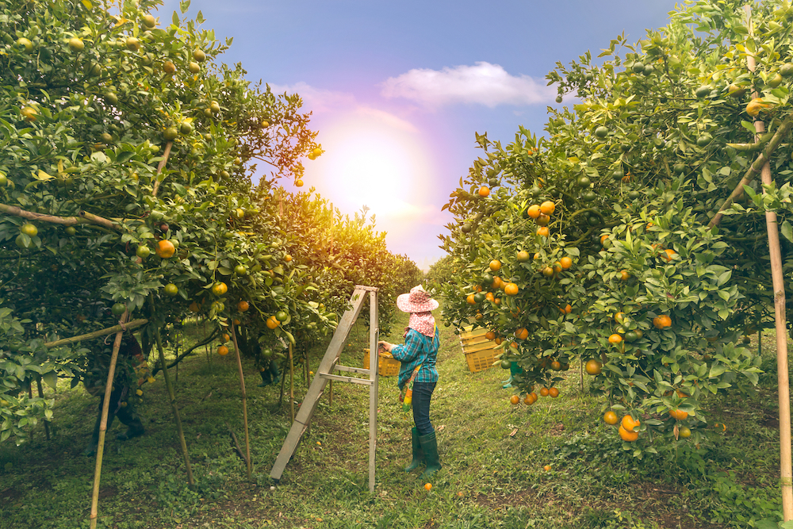
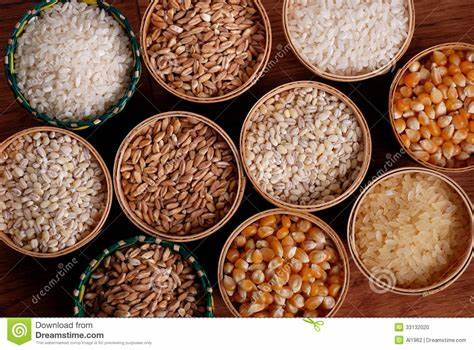
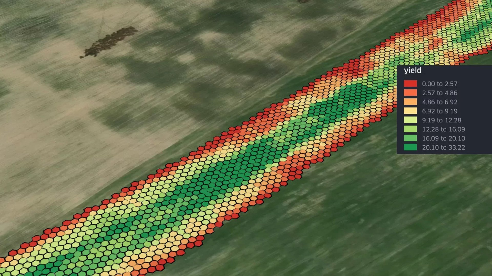
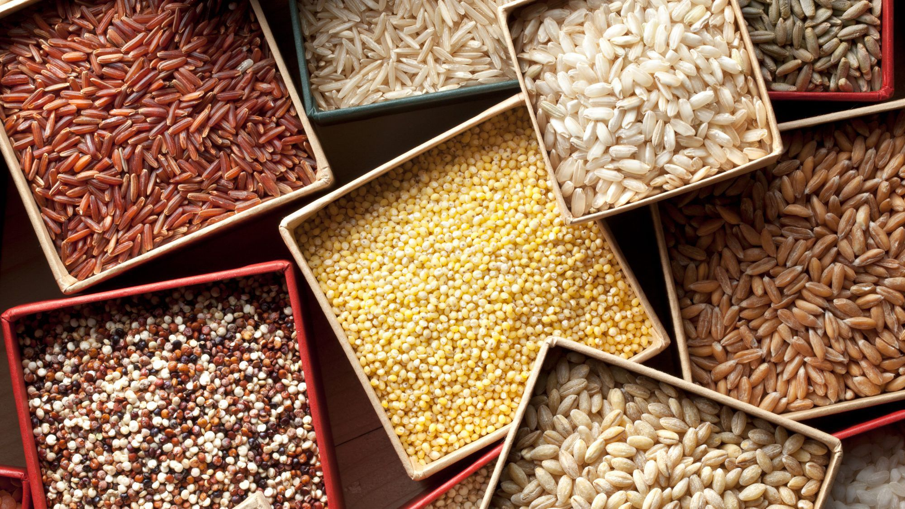
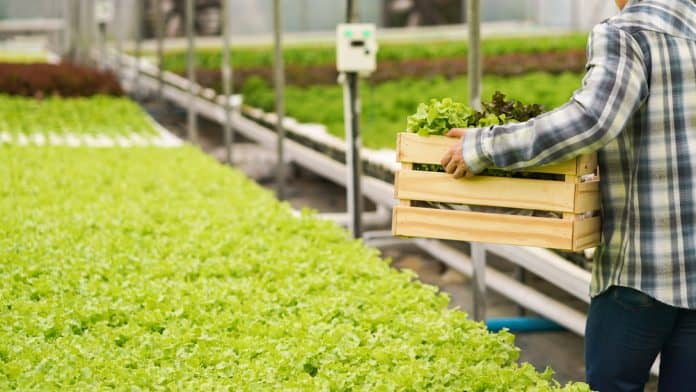

|
Sanchita Das I'm a PhD student in Operations at University of Washington in Seattle, where I work on resource allocation problems in agriculture operations, and am advised by Professors Masha Shunko and Leonard Bousseaix. I have worked on identifying and solutioning operations design problems for Flipkart (Walmart) supply chain network, India's Public Distribution System, and US Apple Farm Supply Chains. I did my Masters at MIT in Cambridge, where I was advised by Dr. Christopher Mejia from the Food and Retail Operations Lab, and a predoc at ISB, Hyderabad where I was advised by Professors Sarang Deo and Sripad Devalkar. I completed my undergraduate education from IIT Kharagpur in India. |
 |
ResearchI'm currently interested in practise based research to inform operations design for food and agriculture systems. I employ techniques from optimization and causal inference. Most of my research is about modelling the physical world from field observations and identifying design levers that can be employed to optimize efficiency and/or equity. Representative working projects are highlighted. |
Dissertation Chapters |
|
 |
Adaptive Labor Hiring for Tree Fruit Harvesting in US Under Climate and Immigration Risk
Sanchita Das, Masha Shunko, Leonard Boussioux, Climate volatility and immigrant hiring requirements pose unique operational challenges in harvesting for US tree fruit growers. We develop a stochastic dynamic and robust framework that hedges temperature shocks while balancing reliable immigrant and flexible local labor. Adaptive hiring lifts profitability ~27%; compressing H-2A visa lead time saves up to 17% — quantifying operations–policy linkages. |
 |
Operational Architecture Moderates Welfare Delivery: Legume Uptake in India and Brazil
Sanchita Das, Christopher Mejia, Tatiana Collese, Marina Norde, Reuben Narad We investigate why legume deficiency persists among the poorest in both India (in-kind PDS) and Brazil (cash Bolsa Família). Using household survey data from both countries, we show that retail capillarity and assortment governance jointly determine when cash or in-kind transfers raise legume uptake — with implications for staple welfare programs worldwide. |
 |
Multimodal Identification of Hotspots of Low and Variable Crop Yields
Leonard Boussioux*, Sanchita Das, Shweta Manjunath Deep Learning Class Project, 2023 To target precision-agriculture sensors where they matter most, we predict district-level yields for sorghum and foxtail millet across India. A multimodal deep-learning pipeline fuses Google Earth Engine multispectral imagery with survey data converted to language embeddings via TabText. The hybrid model reaches 85% accuracy and pinpoints low-yield, high-variability hotspots. |
{kind=link}
{kind=link}
Other Works |
|
 |
Economic Impact of Introduction of Coarse Cereals to India's Public Distribution System
Sripad Devalkar*, Sarang Deo*, Ashwini Chhatre, Bhavna Jha, Saransh Jhunjhunwala, Sanchita Das Estimation of the unobserved supply chain network of India's Public Distribution System, and analysis of the economic impact of introducing coarse cereals to the food basket and allowing their decentralized procurement across states. |
 |
Apertures in Agriculture Seeking Attention
Sanchita Das*, Ramya Srinivasan*, NeurIPS Workshop 2021 - AI for Science, Mind the Gaps An overview of the most pressing operational challenges in agriculture faced by producers, consumers, and the biodiversity across countries. |
{kind=link}
{kind=link}
Services and Recognitions |
|
Teaching |
|
|
Feel free to steal this website's source code. Do not scrape the HTML from this page itself, as it includes analytics tags that you do not want on your own website — use the github code instead. Also, consider using Leonid Keselman's Jekyll fork of this page. |